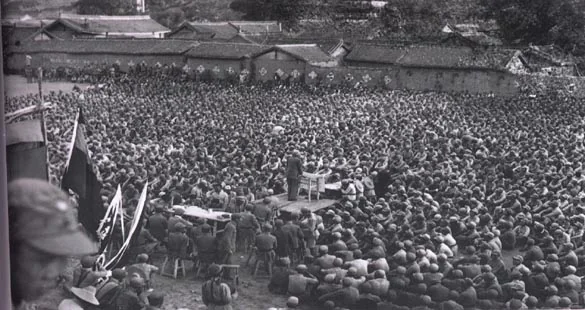

一渡
一渡：从土城撤出
先脱离堵追
当时的情势
遵义会议后，中央红军原拟北渡长江。土城战斗未能取得预期战果，继续在这里作战面临被堵追的危险。
行动与结果
从土城、元厚等渡口西渡
中央红军调整行动，从土城、元厚等渡口西渡赤水河，向川南转移。
脱离土城一带的堵追
红军脱离土城一带的堵追，随后到达川滇边的扎西地区，并进行整编。
1935年1—3月，中央红军在川黔滇边多次调整行动，四次渡过赤水河。从每一次转向的来由，读长征中的这一段。

长征历时1934—1936年。四渡赤水是其中的关键战役；1935年中央红军到达陕北，与1936年红军三大主力会师，是两个不同的历史节点。
中央红军开始长征。
四渡赤水，在川黔滇边机动作战。
巧渡金沙江，跳出包围。
中央红军到达陕北。
红军三大主力会师，长征胜利结束。
一渡 · 西渡
1935年1月29日拂晓
阶段行军概括连线
1月29日西渡；2月上旬向扎西集中。
土城、猿猴场（今元厚）地区分路西渡，向川南机动，随后在扎西地区集中。连线概括阶段顺序，不是1月29日当天全程。
太平河段关系：太平渡上游约5千米为九溪口，二渡、四渡均涉及这一渡口组。此处只列关系；九溪口绝对坐标未核。太平渡、二郎滩是并列渡口，不是沿红线依次到访。
图中十个实点是现代参照：元厚、土城、太平、二郎、茅台、扎西、古蔺、习水、桐梓、遵义。空心区域表示渡河的大致地区，不是1935年浮桥或渡口测点。太平渡口与现代镇政府相距约1.8千米，二郎滩渡口约550米；图上不将镇点当作历史渡口。
九溪口在太平渡上游约5千米，未核绝对坐标，未落地理点。娄山关只按桐梓南、遵义北的关系标为概略通道，未核定关口坐标。手机省略的次要标签可在本资料区查阅。
赤水河源出镇雄，下游在合江入长江。图上河道是依据现代地点方位及茅台在二郎上游等关系绘制的原创概化线；未取得测绘河线，也不虚构支流汇入口。当地河湾两岸不能永久等同“川南／黔北”。
依据：贵州党史资料（2022）、党史和文献研究院（2026）、《四渡赤水出奇兵》、四川省情网渡口资料、汇川区娄山关资料。
地形：Open-Meteo / Copernicus GLO-90，CC BY 4.0；10×9点粗采样经插值、晕渲修改，210—1845米，不是90米分辨率地图或1935年地表复原。
现代参照：维基百科贡献者 / GeoData（CC BY-SA 4.0）、Wikidata（CC0），2026-10-23读取；现代点不等于历史测点。地图数据与自绘图形经概化，以CC BY-SA 4.0提供；原照片和字体另依各自许可。
选择一渡至四渡，对照日期和渡河方向，再展开当时的行动与结果。四次渡河是在变化的形势中作出的调整。
一渡
先脱离堵追
遵义会议后，中央红军原拟北渡长江。土城战斗未能取得预期战果，继续在这里作战面临被堵追的危险。
中央红军调整行动，从土城、元厚等渡口西渡赤水河，向川南转移。
红军脱离土城一带的堵追，随后到达川滇边的扎西地区，并进行整编。
二渡
回到黔北寻找战机
敌军被吸引到川滇边境，黔北兵力相对空虚；川滇敌军又向扎西逼近，北渡长江的计划暂缓执行。
中央红军从太平渡、二郎滩等渡口东渡赤水河，回师黔北，向桐梓方向前进。
红军随后攻取桐梓、娄山关，再占遵义，取得遵义战役的胜利。
三渡
转向河西，寻求机动
遵义战役后，敌军重新组织围攻，企图把中央红军围在遵义、鸭溪一带。红军需要跳出新的合围。
中央红军转兵西进，从茅台及其附近地区西渡赤水河，再入川南，寻求新的机动。
敌方判断红军又要北渡长江，调动重兵围堵，敌军再次向赤水河以西地区集中。
四渡
折返东岸，迅速南下
敌军再次向赤水河以西地区集中。中央红军决定隐蔽、迅速地折返东岸，争取新的机动机会。
中央红军从太平渡、二郎滩、九溪口等渡口东渡赤水河，随后迅速转向南方。
红军重回黔北并向南行动。之后的南渡乌江、威逼贵阳、巧渡金沙江，继续改变了围追堵截的局面。
四渡赤水中，中央红军灵活机动，由被动转向主动，粉碎了敌军在川黔滇边围歼红军的计划。
这些转向并非预先排定的四步。土城战斗的结果、黔北兵力的变化，以及敌军新的围堵，都影响了后续行动。
回看四次转向四渡赤水结束，不等于长征结束，也不意味着红军在渡河当天就完全摆脱了所有围堵。此后，中央红军南渡乌江、威逼贵阳，继而向云南机动，并于5月初巧渡金沙江，逐步跳出敌军的包围。
两幅红军时期的历史照片，保留完整画面与原有比例。图中的部队、事件和时间各有归属，图注随原图一同阅读。
配乐默认关闭，仅在你点击开启后播放。
音频版权与曲目说明长征1934年10月至1936年10月的整体时间框架。
中共中央党史和文献研究院网站，来源《光明日报》。用于四渡进程、运动作战意义及后续行动。
来源中央纪委监察部网站。与上述资料共同支持四次渡河的时间、渡口和方向。
该文所载渡渭河与1934会议原图仅作研究线索，本预览未转载。
摄影者、具体年份、地点与人物未详，不能确认为四渡赤水现场。这幅集会照为四次机动提供队伍生活的背景，不据此指认某一渡的部队或事件。文件页标记 PD-China 和 PD-US1996。
摄影者未详，原始出版来源为解放军出版社1993年《中国人民解放军历史资料丛书·红军长征 图片》。读完四渡，借此回望参与长征的其他红军队伍。此图不是中央红军四渡赤水现场，也不是1936年三大主力会师。文件页标记 PD-China。
PD-China 说明中国法域的公有领域状态；红军集会文件页另有 PD-US1996，说明美国法域的状态依据。这些标记并非全球任意使用授权，其他法域的保护期限与使用限制仍须按当地法律核对。两张照片保持原始字节、完整画面与比例，未裁切或加滤镜。
河谷图为原创生成艺术示意，不作为史料。地图沿用已核对的西、东、西、东关系及概略路线，只表示教学关系，没有测绘坐标或精确地形含义。
配乐默认关闭，仅在你点击开启后播放；若音频模块或曲目不可用，页面自动隐藏播放控件并保持静音。当前采用曲目与许可见上方曲目表及音频版权页。以下为候选与授权依据：
首选候选。作者以钢琴、弦乐与合成器描述此曲，约4:10有戏剧性收束；适配仍需试听确认。
沉静回望段落的备选。原始创作背景为冬夜，与长征没有历史关联。